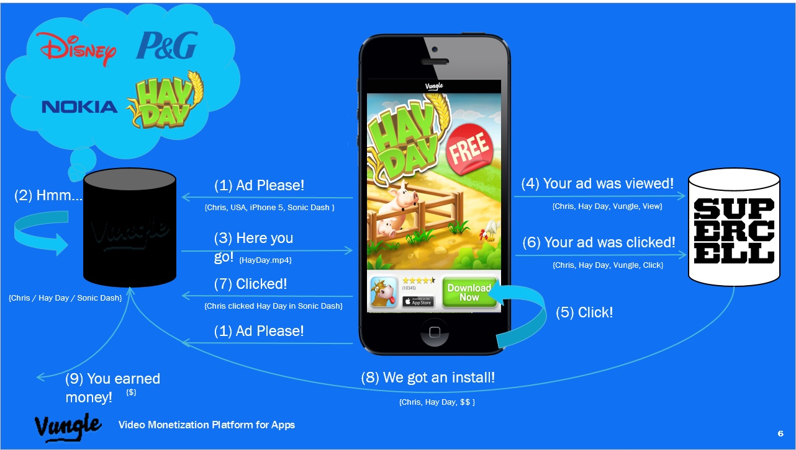
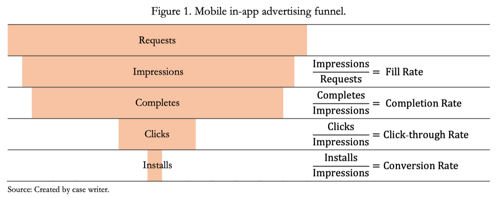

Class 11 Application of RCT
1 Synopsis
1.1 Case Background
Andrew and Hammond, 2 recently graduated MBA students, were tasked with developing an ad-serving learning algorithm for Vungle, a mobile ad-serving company.
Zain Jaffer, the firm’s CEO, planned to test the developed method in parallel with the existing Vungle algorithm.
The hope was that the new algorithm would increase conversion rates and, more specifically, profits (as measured by eRPM).
To test this, two conditions (A, Vungle’s existing algorithm, and B, the data science approach) were evaluated in parallel on randomly assigned users.
1.2 Case Core Question
The case examines the results of an A/B test of the two algorithms during the month of June 2014. You will need to determine whether B outperformed A.
How might Jaffer conclude that B is better than A?
If it is, what would the financial benefits be?
Finally, how long would Jaffer need to wait before declaring a winning algorithm?
2 Situation Analysis
2.1 Company
Business model of Vungle?
Platform model
What are the key players in this mobile video ads market (i.e., Vungle)? Find the info in the case.
- As a comparison, what are the key players in website ads case?

“Four parties participated in the in-app mobile advertisement channel. The user of the mobile device (user), the owner of the app being used (publisher), the sponsor of the video ad the user was exposed to (advertiser), and the platform that matched the choice of ad to a specific user (e.g., Vungle).”
2.2 Company
- How does Vungle make money? Find the info in the case.

“In most cases, payment was made by the advertiser upon installation. Publishers typically received 60% of the revenues and the ad provider the remaining 40%. See Figure 1 for the conversion funnel depicting how an install is achieved. Of all ad requests, most were served and became impressions. When at least 80% of a video ad was watched, it was considered complete. When the user clicked on the ad to get more information, it was counted as a click. The process could then result in an install.”
- How can Vungle improve its revenue using what we’ve learned in Marketing Analytics so far?
Vungle should use predictive analytics to fill the ads that a customer is most likely to click and install. This is essentially a supervised learning problem.
2.3 Customer
- Due to the nature of business model (multi-sided market), who are Vungle’s customers? Find the info in the case.
“In the mobile advertising domain, supply was considered to be the slots available for showing ads, and demand consisted of the advertisers willing to buy the supply by placing ads.”
2.4 Collaborators
- Who are the collaborators of Vungle?
2.5 Competitors

Direct competitors
Indirect competitors
Potential competitors
2.6 Context

Legal: GDPR
Technological: penetration of mobile phones
…
3 Implementation of Experiment
3.1 Step 1: Decide on the Unit of Randomization
- What would be the best unit of randomization?
The best level would be user level. User-device level would be too granular and can easily cause crossover effects.
- How about website-based online ads, say Google ads?
3.2 Step 2: Ensure No Spillover and Crossover Effects
- What are the potential problems for spillover and crossover?
A user may use multiple devices, causing crossover effects
A user may talk to family members/friends, causing spillover effects.
- How about website-based online ads, say Google ads?
3.3 Step 3: Decide on Randomization Allocation Scheme
- How did Vungle implement the randomization scheme? Is it sensible?
Chan’s team thought it would make sense to direct only 1/16th of the users to the B condition. The other randomly assigned 15/16ths of users would receive an ad based on the existing algorithm (i.e., the A condition).
3.4 Step 4: Collect Data
- What data did Vungle collect?
After two weeks, B was looking pretty good. Its daily eRPM was on average $0.131 higher than A’s. Would this translate into annual revenues worthy of the necessary data science investment? Exhibits 2 and 3 provide the daily results of the A/B test.
- Can you do better?
User-level data rather than day-level data would be more granular and can provide higher statistical power.
3.5 Step 5: Interpreting Results from a Field Experiment
- Which step is missing in Vungle A-B testing?
Vungle didn’t do randomization check.
- How to draw statistical conclusions from the Exhibits A and B?
We can conduct a paired t-test to statistically test the effectiveness of B.
3.6 Step 5: Paired t-test
data_vungle <- read.csv("https://www.dropbox.com/s/nsxnworjggreh4s/UV6968-XLS-ENG.csv?dl=1")
t.test((data_vungle%>%filter(Strategy == "Vungle A"))$eRPM,
(data_vungle%>%filter(Strategy == "Vungle B"))$eRPM,
paired = TRUE)
Paired t-test
data: (data_vungle %>% filter(Strategy == "Vungle A"))$eRPM and (data_vungle %>% filter(Strategy == "Vungle B"))$eRPM
t = -3.2837, df = 29, p-value = 0.002677
alternative hypothesis: true mean difference is not equal to 0
95 percent confidence interval:
-0.17959566 -0.04173767
sample estimates:
mean difference
-0.1106667 3.7 Conclusion
Guerin was curious to see how the superior condition would be chosen. How would one conclude that B was better than A?